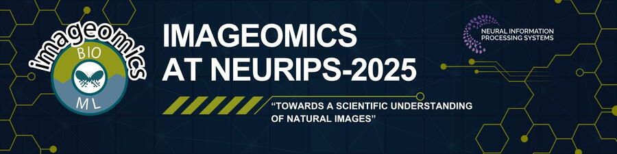

The Imageomics Institute invites researchers to submit papers for its upcoming workshop at the 2025 Conference on Neural Information Processing Systems (NeurIPS), the world-renowned gathering focused on artificial intelligence and machine learning.
The workshop, "Imageomics: Towards a Scientific Understanding of Natural Images," will take place December 15 in Vancouver, Canada, and is co-located with NeurIPS 2025. Submissions are due by September 9, 2025.
As AI continues to shape fields from healthcare to climate science, the Imageomics workshop emphasizes a new frontier—using machine learning to extract biological meaning from images of the natural world. Researchers are encouraged to submit work on topics including functional trait inference, biologically grounded ML, domain adaptation for species recognition, and image-based integration with ecological data.
NeurIPS is a global platform for cutting-edge research. By bringing Imageomics to this stage, we’re highlighting how AI can do more than automate—it can reveal the inner workings of life on Earth.
With biodiversity under threat and ecological data growing in complexity, the workshop aims to build tools that help scientists, conservationists, and policymakers act faster and with greater insight. The Imageomics Institute especially welcomes submissions from early-career researchers and individuals from underrepresented groups.
More information and submission guidelines are available at www.imageomics.org and neurips.cc. Inquiries can be directed to imageomics.neurips@gmail.com.